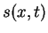
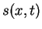
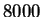
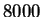

Next: Example of Vision System
Up: Examples of Auditory and
Previous: Examples of Auditory and
Contents
This auditory example data are from experiments
done by the Theunissen Lab at University of California,Berkeley.
Data were obtained from ``con'' stimuli for auditory neurons.
The one-dimensional sound pressure waveform  is first transformed
into a spectrographic representation, , which is the
amplitude envelope of the sound in a set of frequency bands
centered at
is first transformed
into a spectrographic representation, , which is the
amplitude envelope of the sound in a set of frequency bands
centered at  . In this example, the spectrographic representation
uses frequency bands of Hz bandwidth, spanning the frequency
range from
. In this example, the spectrographic representation
uses frequency bands of Hz bandwidth, spanning the frequency
range from  to  Hz. The amplitude envelope in each
band was sampled at a frequency of
to  Hz. The amplitude envelope in each
band was sampled at a frequency of  kHz.
kHz.
2003-03-19